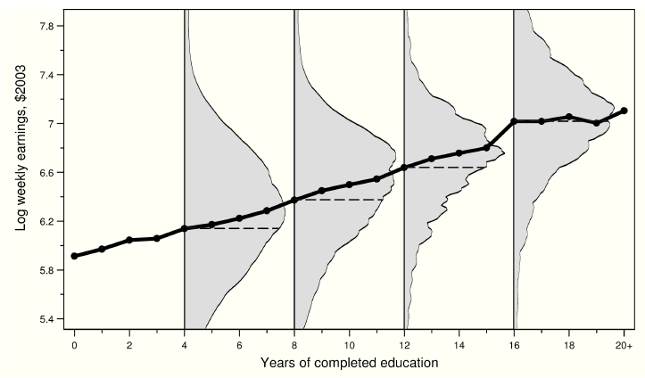
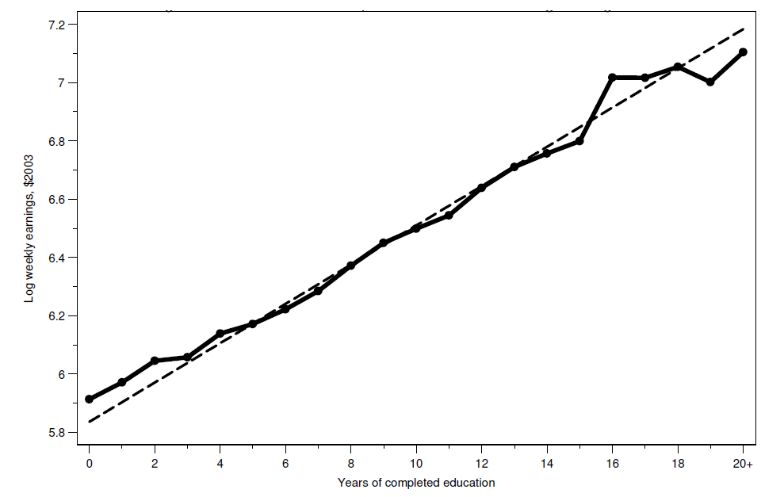
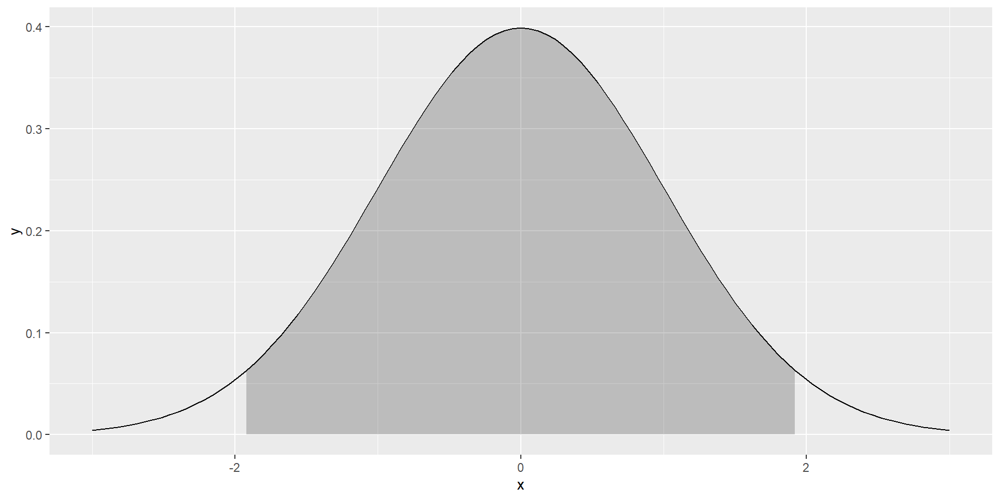
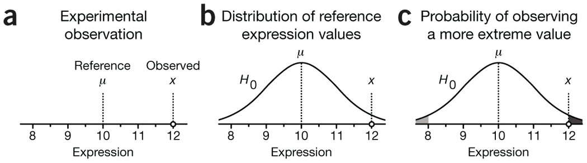

Regresión e Inferencia Estadística
Inferencia Causal
Centro de Investigación y Docencia Económicas
Maestría en Economía
Motivación del uso de regresión en inferencia causal
Regresión como función de esperanza condicional
Olvidemos por ahora la causalidad y centremonos en la conexión entre dos variables, \(y\) y \(s\) (ingreso y educación)
La función de esperanza condicional es una forma de describir la relación entre estas dos variables
Función de esperanza condicional: la FEC de \(y_i\) dado un vector de regresores \(X_i\) es la esperanza o promedio poblacional de \(y_i\) cuando mantenemos fijo \(X_i\) y se denota \(E(y_i|X_i)\)
Para representar una realización particular de \(X_i\) escribimos \(X_i=x_i\), por lo que la FEC es \(E(y_i|X_i=x_i)\)
Con \(y_i\) discreta, la FEC se expresa como
\[E(y_i|X_i=x_i)=\sum_t t P(y_i=t|X_i=x_i)\]
Ejemplo de FEC: salarios y educación en Estados Unidos
- La figura 3.3.1 en MHE muestra la FEC de salarios en Estados Unidos
- Para cada año de educación, vemos cuál es el (log) del ingreso semanal
- La figura muestra dos cosas principales:
- La clara relación positiva entre salarios y educación
- La gran variabilidad en salarios para un nivel de educación dado
Teorema de la regresión de la FEC
- MHE provee varias motivaciones de usar regresión al relacionar la función de regresión con la FEC
- Aquí vamos a rescatar el que considero más intuitivo
- Teorema de la regresión de la FEC: la función \(X_i'\beta\) es la aproximación lineal de mínimos errores cuadrados promedio de \(E(y_i|X_i)\):
\[\beta=\arg\min_b E((E(y_i|X_i)-X_i'b) ^2)\]
- Lo que nos dice este teorema es que si yo quiero aproximar la FEC y mi criterio para obtener la mejor aproximación es un problema de mínimos cuadrados promedio, entonces lo mejor que puedo hacer es que mi aproximación sea \(X'\beta\)
Teorema de la regresión de la FEC
- Este teorema nos dice que si pensamos en en aproximar \(E(y_i|X_i)\), incluso aunque la FEC no sea lineal, la función de regresión nos da la mejor aproximación lineal
- Este teorema es lo más cercano a como interpretamos la regresión en evaluación pues más que querer predicciones de \(y\) para un individuo \(i\), nos interesa la relación promedio entre las variables
- Vale la pena notar que aquí hablamos de la función de regresión poblacional, es decir, aún tenemos que hablar sobre cómo estimarla
Teorema de la regresión de la FEC
Demostración: para la demostración, consideren el problema de regresión poblacional: \[\beta=\arg\min_b E((y_i-X_i'b)^2)\]
Podemos sumar y restar \(E(y_i|X_i)\) y reescribir \((y_i-X_i'b)^2\) como:
\[(y_i-X_i'b)^2 = ((y_i-E(y_i|X_i))+(E(y_i|X_i)+X_i'b))^2= \\ =(y_i-E(y_i|X_i))^2+(E(y_i|X_i)-X_i'b)^2+2(y_i-E(y_i|X_i))(E(y_i|X_i)-X_i'b)\]
El término \((y_i-E(y_i|X_i))^2\) no involucra \(b\) por lo que no importa en el proceso de optimización
Por la Propiedad de Descomposición de la FEC, \(2(y_i-E(y_i|X_i))(E(y_i|X_i-X_i'b))=0\)
Nos queda \((E(y_i|X_i)+X_i'b)^2\), que es exactamente el mismo problema que el del Teorema de la regresión de la FEC
Teorema de la regresión de la FEC
- La figura 3.1.2 en MHE ilustra este teorema
- La línea sólida es la FEC de la relación años de educación - salario
- La línea sólida muestra los promedios del salario para cada año de educación
- La línea quebrada muestra la línea de regresión usando microdatos
- Graficar el coeficiente \(\beta\) que resulta al correr \(y_i=\alpha+\beta s_i+u_i\)
- El teorema de la regresión de la FEC dice que obtenemos la misma recta si hacemos una regresión de \(E(y_i|s_i)=\alpha+\beta s +u\)

- Es decir, calculamos las medias del salario para cada nivel de educación y luego se hacemos una regresión de las medias en función de los niveles de educación (dándole más peso a las observaciones que aportaron más datos a la media de cada nivel)
Modelos saturados
Son modelos de regresión donde incluimos una variable categórica para cada uno de los posibles valores que tomen las \(X_i\)
Del ejemplo con los datos de EUA, hay 21 posibles años de educación, entonces un modelo saturado es:
\[y_i=\alpha+\beta_1 c_{1i} + \beta_2 c_{2i} + \ldots + \beta_{21} c_{21i} + u_i\] donde \(c_{ji}=1\) si el individuo \(i\) tiene una educación \(s_{i}=j\)
- El \(j\)-ésimo coeficiente \(\beta_j\) es el efecto de tener el nivel de educación \(j\)
- Además, \(\alpha=E(y_i|s_i=0)\), se conoce como la categoría omitida
- Podemos escoger la categoría omitida que tenga más sentido
Modelos saturados
- Si tuviéramos dos características, sexo y urbano-rural, un modelo saturado incluye un término interacción:
\[y_i=\alpha+\beta_H x_{Hi} + \beta_R x_{Ri}+ \beta_{HR} x_{Hi}x_{Ri}+u_i\]
A los coeficientes \(\beta_H\) y \(\beta_U\) se les conoce como efectos principales
El término de interacción \(\beta_{HR}\) nos dice cómo cambia el ingreso entre individuos por tipo de localidad y por sexo
- Un modelo saturado, si usamos sexo y \(\tau\) categorías de educación, sería: \[y_i=\alpha+\beta_H x_{Hi}+\sum_{j=1}^{\tau} \beta_j c_{ji} + \sum_{j=1}^{\tau}\beta_{Hj}(x_{Hi}c_{ji}) + u_i\]
Regresión y causalidad
Lo que hemos visto hasta ahora nos dice que la regresión es nuestro mejor aproximación lineal a la FEC
Pero la regresión será causal solo si la FEC es causal
Con lo que hemos visto del modelo de resultados potenciales, podemos tener una interpretación causal de la FEC
- La FEC es causal cuando describe las diferencias en resultados potenciales promedio para una población de referencia fija (Angrist and Pischke, 2009)
- En la relación entre educación y salarios, una FEC causal describiría lo que un individuo ganaría con distintos niveles de educación
- Hay otro caso en el que la regresión puede tener interpretación causal, cuando existe selección basada en observables, que veremos más adelante
Resumen de lo que hemos visto hasta hoy
Las comparaciones observacionales están contaminadas por el sesgo de selección
La aleatorización resuelve el problema de selección, es decir, al comparar la variable de resultados de interés entre individuos tratados y no tratados, obtenemos el efecto causal
La FEC nos ayuda a describir la relación entre dos variables, por ejemplo, entre el estado de tratamiento y la variable de resultados
La regresión es una aproximación lineal a la FEC, aún cuando la FEC no sea lineal
Usaremos regresión como una herramienta para comparar la variable de resultados entre grupos
La regresión tiene una interpretación causal si la FEC que trata de aproximar es cauusal
Inferencia estadística
Medidas de variabilidad
Haremos un breve recordatorio sobre medidas de la precisión de los estimadores que usamos para estimar efectos causales
Comenzamos con la medida pues, en algunos casos, basta con una diferencia de medias para estimar un efecto causal
Sin embargo, las ideas que veremos son fácilmente trasladables a los estimadores de MCO que resultan cuando usamos regresión
Algunas definiciones
Insesgadez de la media muestral: \(E(\bar{y})=E(y_i)\)
La insesgadez implica que, si obtuviéramos muestras repetidas de tamaño fijo, no habría desviaciones sistemáticas con respecto a \(E(y_i)\)
No confundir con LGN, que implican consistencia cuando \(N\to\infty\)
Varianza poblacional: \(V(y_i)=E((y_i-E(y_i))^2)=\sigma_y^2\)
Desviación estándar: \(\sigma_y\)
Varianza muestral: \(S(y_i)^2=\frac{1}{n}\sum_i(y_i-\bar{y})^2\)
¿Cómo medimos la variabilidad de \(\bar{y}\)
Asumamos que las \(y_i\) son iid
Por otro lado, reemplazando la definición:
\[ \begin{aligned} V(\bar{y})&=V\left(\frac{1}{n}\sum_i y_i\right) \\ &=\frac{1}{n^2}V\left(\sum_i y_i\right) \\ &=\frac{1}{n^2}n \sigma^2_y \\ &=\frac{1}{n}\sigma^2_y \end{aligned} \] donde la última igualdad resulta de la independencia entre las \(i\) y dado que las \(y_i\) vienen de la misma población, entonces tienen la misma varianza
¿Cómo medimos la variabilidad de \(\bar{y}\)
Notemos que la varianza de la media muestral depende de la varianza de \(y_i\), \(\sigma^2_y\), pero también de \(n\)
Es aquí donde una LGN tiene un papel, pues cuando \(n\to\infty\), la varianza de la media muestral tiende a cero
El error estándar se define como: \(SE(\bar{y})=\sigma_y/\sqrt{n}\)
Todos los estimadores que usamos tienen un error estándar, algunos con una forma más complicada que otra, pero todos ellos tienen la misma interpretación: resumen la variabilidad que surge por el muestreo aleatorio
- La contraparte muestral del error estándar, formalmente llamado error estándar estimado de la media muestral es:
\[\hat{SE}(\bar{y})=\frac{S(y_i)}{\sqrt{n}}\]
El estadístico \(t\)
Supongamos que queremos probar la hipótesis de que \(E(y_i)=\mu\)
El estadístico \(t\) se define como: \[t(\mu)=\frac{\bar{y}-\mu}{\hat{SE}(\bar{y})}\]
A la hipótesis que queremos probar se le conoce como la hipótesis nula, \(H_0\)
Bajo \(H_0\): \(\mu=0\), el estadístico es \(t(\mu)=\frac{\bar{y}}{\hat{SE}(\bar{y})}\)
Un TLC nos garantiza que \(t(\mu)\) se distribuye normal en una muestra lo suficientemente grande, sin importar la distribución de \(y_i\)
Por tanto, podemos tomar decisiones sobre la \(H_0\), basados en si \(t(\mu)\) es consistente con lo que esperaríamos ver con una distribución normal
Distribución normal
La conveniencia de la distribución normal es que conocemos muchas propiedades teóricas de esta
Por ejemplo, grafiquemos una normal arbitraria con media 0 y desviación estándar 1:
normal_curve <- ggplot(data.frame(x = c(-3, 3)),aes(x = x)) +
stat_function(fun = dnorm, args= list(0, 1))
funcShaded <- function(x) {y <- dnorm(x, mean = 0, sd = 1)
y[x < (0 - 1.96 * 1) | x > (0 + 1.96 * 1)] <- NA
return(y)
}
normal_curve <-normal_curve+stat_function(fun=funcShaded, geom="area", fill="black", alpha=0.2)Distribución normal

Por ejemplo, sabemos que el 95% de las realizaciones se encuentran en el intervalo \([\mu-1.96\sigma, \mu+1.96\sigma]\)
De aquí surge que, cuando trabajamos al 95% de confianza (típico en economía), se usa una regla de dedo de 2 para juzgar el valor de un estadístico \(t\)
Un estadístico \(t\) mayor que \(|2|\) indica que la \(H_0\) de que \(\mu=0\) es altamente improbable
Intervalos de confianza
En vez de probar si en una muestra la \(H_0\) se rechaza o no, para muchos posibles valores de \(\mu\), podemos construir el conjunto de todos los valores de \(\mu\) que son consistentes con los datos
A esto le llamamos intervalo de confianza de \(E(y_i)\)
- Un intervalo de confianza es el conjunto de valores consistente con los datos:
\[IC_{0.95}=\{\bar{y}-1.96\times\hat{SE}(\bar{y}),\quad \bar{y}+1.96\times\hat{SE}(\bar{y})\}\]
Si tuviéramos acceso a muestras repetidas y en cada una calculáramos \(\bar{y}\), esperamos que en el 95% de los casos \(E(y_i)\) está en el intervalo de confianza
Noten que el IC no se interpreta como la probabilidad de que el parámetro se encuentre en cierto rango
La interpretación es más sutil, lo que sucedería si tuviéramos distintas muestras de la misma población
El problema es que casi siempre tenemos acceso a una sola muestra
Repaso de teoría asintótica de MCO
Propiedades del estimador de MCO
En la práctica, no conocemos la FEC ni la función de regresión poblacional
Hemos visto que una forma de aproximar la FEC es usando regresión, es decir, quisiéramos conocer \(\beta=E(X_iX_i')^{-1}E(X_iy_i)\), un objeto poblacional
En la práctica aproximamos \(\beta\) con su análogo muestral: \(\hat{\beta}_{MCO}=(X'X)^{-1}(X'Y)\)
Con algo de álgebra, escribimos el estimador de MCO como \[\hat{\beta}_{MCO}=\beta +\left(\sum x_ix_i'\right)^{-1}\left(\sum x_i u_i\right)\]
Multiplicando por \((1/N)^{-1}(1/N)=1\) el segundo término: \[\hat{\beta}_{MCO}=\beta +\left(\frac{1}{N}\sum x_ix_i'\right)^{-1}\left(\frac{1}{N}\sum x_i u_i\right)\]
Esta representación con promedios es útil para usar leyes de grandes números (LGN) y teoremas de límite central (TLC)
Distribución asintótica
- La teoría asintótica nos garantiza que, si \(E(u_i|x_i)=0\) la distribución asintótica del estimador de MCO es
\[\hat{\beta}_{MCO}\stackrel{a}{\sim}\mathcal{N}\left(\beta,(X'X)^{-1}X'uu'X(X'X)^{-1}\right)\]
Estos son resultados asintóticos, válidos cuando \(N\to \infty\)
Son convenientes porque no asumimos forma distribucional sobre los errores
En los cursos introductorios de econometría asumíamos, entre otras cosas, errores normales y homocedásticos
Aquí tenemos menos supuestos
La distribución asintótica nos dice que el estimador de MCO tiene una distribución normal y que su varianza depende de la varianza de los errores
Estimación de la varianza
Tenemos que estimar también la varianza del estimador de MCO
En un influyente artículo, White (1980) muestra que podemos estimar consistentemente \(\hat{V}(\hat{\beta}_{MCO})\) usando:
\[\hat{V}(\hat{\beta}_{MCO})=(X'X)^{-1}\left(\sum_i \hat{u}_i^2x_ix_i'\right)(X'X)^{-1}\] - Esto es a lo que conocemos como la matriz de varianzas robusta a heterocedasticidad
Son robutos porque no hacemos supuestos sobre la distribución de los errores
En un caso particular, casi nunca usado en la práctica, si asumimos errores independientes e idénticamente distribuidos:
\[\hat{V}^H(\hat{\beta}_{MCO})=\hat{s}^2(X'X)^{-1}\] donde \(\hat{s}\) es la varianza muestral
Errores estándar del estimador de MCO
- Partiendo del estimador de la matriz de varianzas del estimador de MCO propuesto por White (1980)
\[\hat{V}(\hat{\beta}_{MCO})=(X'X)^{-1}\left(\sum_i\hat{u}_i^2x_ix_i'\right)(X'X)^{-1}\]
el error estándar de \(\hat{\beta}_k\) será la raíz cuadrada de la \(k\)-ésima entrada sobre la diagonal principal de \(\hat{V}(\hat{\beta}_{MCO})\) y lo denominamos \(\hat{EER}(\hat{\beta}_k)\) por venir de una matriz de varianzas robusta
- Con los mismos principios que para la media muestral, una estadístico \(t\) se define como:
\[t(\beta_k)=\frac{\hat{\beta}_k-\beta_k}{\hat{EER}(\hat{\beta}_k)}\]
Prueba de hipótess
- Anteriormente motivamos el uso de regresión para estimar efectos de tratamiento:
\[y_i=\alpha+\beta T_i +\gamma_1 x_1 + \gamma_2 x_2 + \ldots + \gamma_{K-2} x_{K-2} + u_i\]
Supongamos que el tratamiento fue asignado aleatoriamente y el diseño permaneció íntegro
Nos interesa entonces probar la hipótesis nula de que \(\beta=0\)
- Un estadístico \(t\) para probar esta hipótesis tiene la forma:
\[t(\beta)=\frac{\hat{\beta}}{\hat{EER}(\hat{\beta})}\] - Bajo la \(H_0\), el estadístico \(t\) se distribuye asintóticamente normal
- Podemos comparar el valor \(t(\beta)\) con la distribución normal teórica para decir qué tan probable es observar dicho valor del estadístico
El valor \(p\)
La otra cara de la moneda de los estadísticos de prueba es el valor \(p\)
El valor \(p\) es la probabilidad de observar un valor más extremo que el estadístico cuando la \(H_0\) es verdadera
Un valor \(p\) muy pequeño indica que es muy poco probable observar el estadístico de prueba bajo la \(H_0\), por lo que hay evidencia para rechazar la \(H_0\)
Otra forma de intepretar el valor \(p\) es la probabilidad de que se observen efectos iguales o más grandes a los observados debido al error muestral (por suerte)
Valores \(p\)
Supongamos que un programa incrementa los ingresos en 100 pesos mensuales en promedio, con un valor \(p\) de 0.07
Entonces, si el programa no tuviera efecto, todavía sería posible ver incrementos en los ingresos de 100 pesos mensuales o más en el 7% de los estudios debido al error muestral
En este breve texto de Krzywinski & Altman (2013) pueden leer algunos otros detalles sobre el valor \(p\)

Fuente: Krzywinski & Altman (2013)
Valores \(p\)
¿Qué tanto toleramos que nuestros resultados puedan ser por suerte?
Fijamos un nivel de significancia \(\alpha\), definido como la probabilidad de rechazar la \(H_0\) dado que esta es verdadera
Es decir, la probabilidad de cometer el error tipo 1 o falso positivo
En economía usamos frecuentemente los valores \(\alpha\) de 0.10, 0.05 y 0.01 para juzgar la significancia de los estimadores
En evaluación, si el valor \(p\) es menor que \(\alpha\) decimos que el efecto es estadísticamente significativo
Nota sobre los valores \(t\) críticos
Los correspondientes valores del estadístico \(t\) en muestras grandes para \(\alpha\) de 0.10, 0.05 y 0.01 son 2.56, 1.96 y 1.64
¿Cómo puedo encontrar el valor \(p\) exacto de un estadístico \(t\) dado?
- O uno menos arbitrario
Poniendo junto todo lo que hemos aprendido
Formulamos una pregunta causal \(D_i \to y_i\)
Tengo razones para asumir que \(D_i\) es independiente de \(y_i\) (por ejemplo, hice un experimento)
Sé que una regresión me ayudará a hacer comparaciones:
\[y_i=\alpha+\beta D_i + B'X_i + u_i\]
Formulamos la \(H_0\): \(\beta=0\), es decir, no hay efecto del tratamiento
Estimo la regresión, obtengo \(\hat{\beta}\), y construyo \(t=\frac{\hat{\beta}}{\hat{se}(\hat{\beta})}\)
Poniendo junto todo lo que hemos aprendido
El software me permite estimar \(\hat{\beta}\), \(t(\hat{\beta})\) y \(p\)
\(t(\hat{\beta})\) y \(p\) son dos caras de la misma moneda
Si \(p>\alpha\), hay una probabilidad de observar \(\hat{\beta}\) debido al error muestral mayor que \(\alpha\)
O, en términos de \(t\), es altamente probable observar el estadístico bajo la \(H_0\), por lo que no se rechaza la \(H_0\)
Las hipótesis no son exclusivamente de efectos de tratamiento
Otras hipótesis:
- Las características observables están balanceadas
- La atrición ocurrió al azar
- Existen efectos de derrame
Regresión e Inferencia Estadística
Inferencia Causal
CIDE · Maestría en Economía
© 2026 Irvin Rojas. Distribuido bajo licencia Creative Commons CC BY-NC-SA 4.0. Los materiales de terceros citados conservan sus propios derechos.

Inferencia Causal · Regresión e Inferencia Estadística